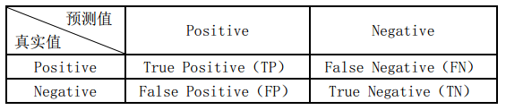

F1 score是一个平均数；对精确率与召回率进行平均综合的一个结果
以二分类为例，样本有正负两个类别

准确率：预测对的样本数占样本总数的比例

精确率（查准率）： 预测为正的样本中有多少是真正的正样本

召回率（查全率）： 样本中的正例有多少被预测正确了

一般情况下，召回率和精确率是针对某一个类别说的，比如正类别的Recall，负类别的Recall等。
如果你是10分类，那么可以有1这个类别的Precision，2这个类别的Precision，3这个类别的Recall等。而没有类似全部数据集的Recall或Precision这种说法。
通常对于二分类，我们说正类的recall和precision。
Micro-F1(把各个类的TP等加起来)
统计各个类标的TP、FP、FN、TN，加和构成新的TP、FP、FN、TN，然后即可计算micro-Precision和micro-Recall，得到micro-F1
Macro-F1（先求F1，在加起来求平均）
统计各个类标的TP、FP、FN、TN，分别计算各自的Precision和Recall，得到各自的F1值，然后取平均值得到macro-F1
from sklearn.metrics import f1_score
y_pred = [0, 1, 1, 1, 2, 2]
y_true = [0, 1, 0, 2, 1, 1]
print(f1_score(y_true, y_pred, average='macro'))
print(f1_score(y_true, y_pred, average='weighted'))
ROC曲线